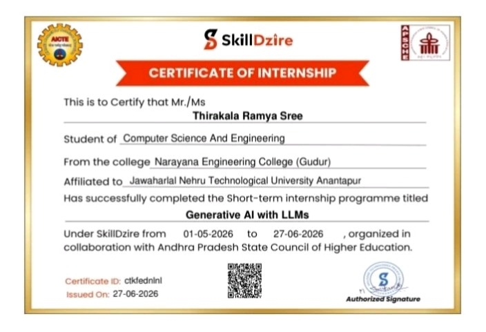

GENERATIVE AI WITH LLMS: AI-POWERED STUDY ASSISTANT USING RAG
---
Submitted in partial fulfillment of the requirement for the award of the Degree of
BACHELOR OF TECHNOLOGY
IN
COMPUTER SCIENCE & ENGINEERING
Submitted by:THIRAKALA RAMYA SREE(Roll No: 23F11A05I3)Under the esteemed guidance of:Mr. N. Subramanyam, M.TechAssistant Professor, Department of CSE
---
```
┌────────────────────────┐
│ [NECG LOGO] │
│ AUTONOMOUS │
└────────────────────────┘
```
DEPARTMENT OF COMPUTER SCIENCE AND ENGINEERING
NARAYANA ENGINEERING COLLEGE :: GUDUR
(AUTONOMOUS)(Recognised by UGC 2(f) and 12(B), An ISO 9001:2015 Certified Institution Approved by AICTE New Delhi & Permanently Affiliated to JNTUA, Ananthapuramu)Dhurjati Nagar, Gudur – 524101, SPSR Nellore Dt., A.P., IndiaWEBSITE: [www.necg.ac.in](http://www.necg.ac.in)
---
NARAYANA ENGINEERING COLLEGE :: GUDUR
(AUTONOMOUS)(Recognised by UGC 2(f) and 12(B), An ISO 9001:2015 Certified Institution Approved by AICTE New Delhi & Permanently Affiliated to JNTUA, Ananthapuramu)Dhurjati Nagar, Gudur – 524101, SPSR Nellore Dt., A.P., IndiaWEBSITE: [www.necg.ac.in](http://www.necg.ac.in)
This is to certify that the internship report entitled “GENERATIVE AI WITH LLMS: AI-POWERED STUDY ASSISTANT USING RAG” being submitted by Thirakala Ramya Sree (23F11A05I3), in partial fulfilment for the award of the Degree of Bachelor of Technology in Computer Science & Engineering to the Narayana Engineering College, Gudur is a record of bonafide work carried out by him/her under my guidance and supervision.
INTERNSHIP GUIDE
HEAD OF THE DEPARTMENT
Mr. N. Subramanyam, M.Tech Assistant Professor, Department of CSE
Dr. V. Sucharita, Ph.D. Professor & HOD, Department of CSE
---
ACKNOWLEDGEMENT
I am extremely thankful to Dr. P. Narayana, the Founder Chairman of Narayana Group for his great vision and initiative in establishing a premier technical institution in a rural area like Gudur to help students excel in engineering and technology.
I am also thankful to Mr. K. Puneeth, the Chairman of Narayana Group for providing modern infrastructural and computing facilities to work in, without which this work would not have been possible.
I would like to express our deep sense of gratitude to Dr. K. Viswak Sena Reddy, Principal & Director, Narayana Engineering College, Gudur for his continuous efforts in creating a competitive academic environment in our college and encouraging us throughout this internship.
I would like to convey our heartfelt thanks to Dr. V. Sucharita, Ph.D., Professor & Head of the Department of Computer Science and Engineering, for providing the opportunity to embark upon this topic and for her continuous encouragement throughout the preparation of this project report.
I would like to thank our esteemed guide Mr. N. Subramanyam, M.Tech, Assistant Professor, Department of CSE, for his valuable guidance, constant assistance, support, endurance, and constructive suggestions for the betterment of the project.
I also express my sincere gratitude to SkillDzire in collaboration with the Andhra Pradesh State Council of Higher Education (APSCHE) and AICTE for providing an enriching short-term internship program on Generative AI with LLMs (01-05-2026 to 27-06-2026) and offering invaluable industry guidance.
I also wish to thank all the teaching and non-teaching staff members of the Department of Computer Science & Engineering for helping us directly or indirectly in completing this project successfully.
Finally, I am deeply thankful to my parents and friends for their continued moral, financial, and emotional support throughout the course and in helping me finalize this report.
THIRAKALA RAMYA SREE(Roll No: 23F11A05I3)
---
CONTENTS
S.No
TITLE
PAGE NO
1.
OVERVIEW OF ARTIFICIAL INTELLIGENCE 1.1 What is Artificial Intelligence? 1.2 AI, Machine Learning, Deep Learning, and Generative AI 1.3 Goals and Applications of Modern AI 1.4 AI Workflow for Knowledge Retrieval and Educational Assistance 1.5 History and Evolution of AI & LLMs
DATA HANDLING AND PREPROCESSING 3.1 Datasets, Textual Documents, and Unstructured Data 3.2 NumPy, Pandas, and Text Extraction (PyPDF / Plain Text) 3.3 Text Normalization, Sliding-Window Chunking & Preprocessing
11 – 12
4.
INTRODUCTION TO MACHINE LEARNING 4.1 Major Learning Approaches 4.2 Distance Metrics, Similarity Functions & Classification
13 – 14
5.
NATURAL LANGUAGE PROCESSING & VECTOR EMBEDDINGS 5.1 Evolution from TF-IDF to Dense Semantic Embeddings 5.2 Sentence-Transformers (`all-MiniLM-L6-v2`) & Vector Representation
DEEP LEARNING, TRANSFORMERS & LARGE LANGUAGE MODELS 7.1 Neural Networks, Self-Attention & Transformer Architecture 7.2 Generative Large Language Models (LLMs) & Prompt Engineering
18
8.
STREAMLIT WEB APPLICATION DEVELOPMENT 8.1 Streamlit Reactive Architecture & State Management 8.2 Real-time Chat UI, High-Contrast Theming & Generative Widgets
19 – 20
9.
SECURITY, MULTI-LANGUAGE & VOICE INTEGRATION 9.1 Local Password Hashing (Bcrypt) & Isolated User Sessions 9.2 Browser Web Speech API (Speech-to-Text & Text-to-Speech) & Multi-Language Support
MAIN PROJECT: GENERATIVE AI WITH LLMS: AI-POWERED STUDY ASSISTANT USING RAG 11.1 Project Introduction & Key Features 11.2 Problem Statement and Objectives 11.3 Scope and Technical Requirements 11.4 System Architecture & RAG Pipeline Flow 11.5 Document Ingestion & Sliding-Window Chunker 11.6 Sentence-Transformer Embeddings & FAISS Vector Store 11.7 Top-K Retriever & Hybrid Prompt Generation 11.8 Local Bcrypt Authentication & Session Isolation 11.9 Multi-Language Translation & Client-Side Voice Engine 11.10 Project Directory Structure 11.11 Complete RAG Engine Implementation (`rag_engine.py`) 11.12 Complete Streamlit Chat Interface (`app.py` – Core UI) 11.13 Complete User Authentication & Workspace Module (`auth.py`) 11.14 Complete Localization Dictionary (`ui_strings.py`) 11.15 Testing, Verification & Illustrative Outputs 11.16 Limitations & Future Enhancements
28 – 44
12.
CONCLUSION
45
13.
COURSE COMPLETION CERTIFICATE
46
---

1. OVERVIEW OF ARTIFICIAL INTELLIGENCE
1.1 What is Artificial Intelligence?
Artificial Intelligence (AI) is a major branch of computer science dedicated to creating software systems capable of performing cognitive tasks that historically required human intelligence. These tasks encompass visual perception, speech recognition, multilingual understanding, pattern synthesis, decision-making, and contextual text reasoning.
In modern educational and enterprise contexts, AI has evolved from static rule engines to dynamic data-driven systems capable of ingesting extensive course literature, synthesizing complex queries, and providing reliable, grounded answers. The 8-week internship focused on understanding foundational AI principles, machine learning paradigms, deep neural architectures, dense semantic embeddings, and Retrieval-Augmented Generation (RAG) using Large Language Models.
---
1.2 AI, Machine Learning, Deep Learning, and Generative AI
- 1950s: Alan Turing proposes the Turing Test; Dartmouth Workshop (1956) officially coins the term "Artificial Intelligence".
- 1960s–1980s: Rule-based expert systems, symbolic reasoning, and early perceptrons emerge.
- 1990s–2000s: Statistical machine learning takes center stage (SVMs, TF-IDF, Naive Bayes, Random Forests).
- 2010s: Deep learning revolution powered by GPUs, CNNs, Word2Vec, RNNs, and LSTMs.
- 2017: Vaswani et al. introduce the Transformer architecture ("Attention Is All You Need").
- 2020s–Present: Emergence of Large Language Models (GPT-4, Gemini, LLaMA), dense semantic embeddings, and Retrieval-Augmented Generation (RAG) as the industry standard for private enterprise search and verifiable question answering.
---
2. INTRODUCTION TO PYTHON
2.1 Python Fundamentals
Python is the predominant programming language for Artificial Intelligence, Machine Learning, and Data Science due to its clean syntax, extensive standard library, dynamic typing, and vibrant open-source ecosystem.
Key language components utilized throughout the internship:
- Data Types & Dynamic Structures: Lists, Dictionaries, Sets, Tuples, Strings, Bytes.
- Control Flow: Structured conditionals (`if-elif-else`), loops (`for`, `while`), and list/dictionary comprehensions.
- Modular Programming: Separation of concerns across reusable modules (`rag_engine.py`, `auth.py`, `ui_strings.py`, `app.py`).
- Object-Oriented Design: Encapsulated classes for embeddings (`Embedder`) and vector retrieval (`RagEngine`).
```python
Reusable Text Sanitizer and Sliding-Window Chunker
2.2 Functions, Collections, and Exception Handling
Robust exception handling ensures the application recovers gracefully from missing API keys, corrupt PDF uploads, or unindexed vector queries without crashing.
```python
try:
with open("sample_notes.txt", "r", encoding="utf-8") as f:
content = f.read()
except FileNotFoundError:
content = ""
print("Warning: Document not found. Initializing empty buffer.")
```
---
3. DATA HANDLING AND PREPROCESSING
3.1 Datasets and Unstructured Textual Data
Unlike structured tabular data, educational study materials exist as unstructured PDF slides, digitized lecture notes, and textbook chapters. These documents contain diverse formatting, line breaks, mathematical symbols, and varying paragraph lengths that require systematic normalization.
```
RAW PDF / TXT ──► TEXT EXTRACTION (PyPDF) ──► WHITESPACE NORMALIZATION ──► SLIDING-WINDOW CHUNKS
```
3.2 NumPy and Pandas
- NumPy: Provides efficient N-dimensional array manipulations, matrix dot products, and vector normalization for embeddings.
- Pandas: Supports tabular metadata indexing, session history tracking, and benchmark evaluation.
3.3 Text Normalization and Chunking Strategy
To prevent context fragmentation, the sliding-window chunking algorithm divides documents into segments of 800 characters with an overlap of 150 characters. This ensures that sentences spanning across boundary splits retain complete semantic meaning during vector embedding.
---
4. INTRODUCTION TO MACHINE LEARNING
4.1 Major Learning Approaches
1. Supervised Learning: Training models on labeled pairs $(X, y)$ such as text classification.
2. Unsupervised Learning: Discovering intrinsic geometric groupings and clusters in high-dimensional feature spaces (e.g., K-Means, FAISS vector clustering).
3. Self-Supervised Representation Learning: Training Transformer encoders on massive text corpora to generate dense semantic vector embeddings.
4.2 Distance Metrics & Cosine Similarity
Semantic search relies on computing the angular proximity between vector representations in high-dimensional space:
$$\text{Cosine Similarity}(\vec{u}, \vec{v}) = \frac{\vec{u} \cdot \vec{v}}{\|\vec{u}\| \|\vec{v}\|}$$
When vectors are $L_2$-normalized ($\|\vec{u}\| = 1$), the cosine similarity simplifies directly to the inner product ($\vec{u} \cdot \vec{v}$), enabling ultra-fast vector retrieval via `faiss.IndexFlatIP`.
---
5. NATURAL LANGUAGE PROCESSING & VECTOR EMBEDDINGS
5.1 Evolution from Sparse TF-IDF to Dense Semantic Embeddings
Traditional sparse techniques (TF-IDF, Bag-of-Words) rely on exact keyword matching and fail when students ask questions using synonyms or alternative phrasing. Dense embeddings map words and sentences into continuous low-dimensional vector spaces ($d = 384$) where semantically similar concepts reside close to each other.
Feature
Sparse TF-IDF
Dense Sentence-Transformers
Representation
High-dimensional sparse vector
Compact dense vector ($384$ dimensions)
Synonym Handling
Fails on vocabulary mismatch
Captures contextual synonyms automatically
Semantic Meaning
Word frequency only
Deep semantic and contextual understanding
Speed & Scalability
Fast keyword lookup
Ultra-fast via FAISS vector indexing
5.2 Sentence-Transformers (`all-MiniLM-L6-v2`)
The project utilizes the `sentence-transformers/all-MiniLM-L6-v2` model. It maps sentences into a 384-dimensional dense vector space, optimized for speed and accuracy in semantic search tasks.
---
6. MODEL EVALUATION & RETRIEVAL METRICS
6.1 Evaluation Metrics
1. Top-$K$ Retrieval Precision: Fraction of retrieved passages containing relevant concepts.
2. Faithfulness / Grounding Score: Degree to which the LLM answer is factually supported by retrieved source chunks without external hallucinations.
3. Latency / Response Time: Time taken to embed queries, search FAISS index, and stream LLM completions.
6.2 Extractive Fallback Strategy
When an OpenAI API key is unavailable, the system automatically activates its Extractive Fallback Engine, retrieving the highest-ranked semantic passages and translating them using `deep-translator` to guarantee continuous, zero-cost functionality.
---
7. DEEP LEARNING, TRANSFORMERS & LARGE LANGUAGE MODELS
7.1 Neural Networks & Self-Attention
Transformers utilize Scaled Dot-Product Self-Attention to compute contextual relationships across all words in a sequence simultaneously:
$$\text{Attention}(Q, K, V) = \text{softmax}\left(\frac{QK^T}{\sqrt{d_k}}\right)V$$
7.2 Large Language Models & Grounded Prompt Engineering
Large Language Models (`GPT-4o-mini`) generate fluent natural language explanations. By supplying retrieved document chunks inside a strictly grounded system prompt, the model is constrained to answer solely based on the student's uploaded notes:
```
SYSTEM INSTRUCTION:
You are an expert AI Study Assistant. Answer the student's question strictly using
the provided context passages. If the answer cannot be found in the context, clearly
state that the material does not cover this topic.
```
---
8. STREAMLIT WEB APPLICATION DEVELOPMENT
8.1 Streamlit Architecture
Streamlit provides a reactive, stateful web execution model in Python. Session state (`st.session_state`) persists conversation history, authentication tokens, and cached embedding models (`@st.cache_resource`) across browser reruns.
8.2 Custom High-Contrast Theming
To ensure maximum readability (WCAG AA/AAA compliant), the user interface features:
- Solid dark slate surfaces (`#111827`, `#161f30`)
- High-contrast typography (`#FFFFFF`, `#F8FAFC`)
- Explicit solid action buttons (`#6366F1`) with glowing purple borders (`#A78BFA`)
---
9. SECURITY, MULTI-LANGUAGE & VOICE INTEGRATION
9.1 Local Password Hashing & User Session Isolation
- Security: Passwords are never stored in plaintext. They are salted and hashed using `bcrypt` (12 rounds) and stored in `users.json`.
- Data Isolation: Each student's indexed documents, FAISS indices, and chat logs are stored in isolated per-user directories (`user_data/{username}/`), preventing data leakage between students.
9.2 Browser-Native Web Speech API (Voice I/O) & Localization
- Speech-to-Text (STT): Microphone audio is transcribed in real-time in the browser using the HTML5 `webkitSpeechRecognition` API.
- Text-to-Speech (TTS): Responses can be read aloud using browser-native `SpeechSynthesis`.
- Multi-Language Support: The entire UI and answering pipeline support English, Hindi (हिन्दी), Telugu (తెలుగు), and Tamil (தமிழ்).
---
10. WEEKLY ASSIGNMENTS & PRACTICAL EXERCISES
10.1 Week 1: Python Programming Exercises
- Topics: Dynamic collections, string formatting, reusable helper methods, exception handling.
- Code Exercise:
```python
def validate_student_input(query: str) -> str:
cleaned = query.strip()
if len(cleaned) < 3:
raise ValueError("Question is too short.")
return cleaned
```
10.2 Week 2: Document Processing & PDF Text Extraction
- Topics: Reading PDF/TXT files, stripping whitespace, chunking text into overlapping windows.
11. MAIN PROJECT: AI-POWERED STUDY ASSISTANT USING LLMS AND RAG
11.1 Project Introduction & Key Features
The AI-Powered Study Assistant is an intelligent educational platform that enables students to upload course materials (.pdf, .txt) and ask questions grounded strictly in their own notes.
Core Features:
1. Grounded RAG Pipeline: Accurate answers citing source documents.
2. Hybrid & Strict Modes: Choose between strict course-only answers or hybrid ChatGPT general knowledge.
3. Local Authentication: Multi-student signup/login with secure bcrypt password hashing.
4. Per-User Workspace Isolation: Complete privacy between student accounts.
5. Multi-Language Support: Seamless UI and answers in English, Hindi, Telugu, and Tamil.
6. Voice Input & Output: Client-side speech-to-text and audio playback.
7. Dedicated Chat & Knowledge Management: Separate options to clear chat history or reset the knowledge base.
---
11.2 Problem Statement & Objectives
- Problem: General-purpose LLMs frequently hallucinate and lack access to specific classroom lecture slides and university syllabi.
- Objective: Build an end-to-end RAG system that indexes student notes, retrieves relevant chunks via FAISS vector search, and generates grounded, multi-lingual answers with complete source transparency.
---
```python
import os
from pathlib import Path
import numpy as np
import faiss
from sentence_transformers import SentenceTransformer
from pypdf import PdfReader
from openai import OpenAI
class Embedder:
def __init__(self, model_name: str = "all-MiniLM-L6-v2"):
self.model = SentenceTransformer(model_name)
def embed(self, texts: list[str]) -> np.ndarray:
embeddings = self.model.encode(texts, convert_to_numpy=True, normalize_embeddings=True)
return embeddings.astype(np.float32)
class RagEngine:
def __init__(self, embedder: Embedder):
self.embedder = embedder
self.chunks = []
self.doc_names = []
self.index = None
self.openai_client = None
def ingest_folder(self, folder_path: str) -> int:
self.chunks, self.doc_names = [], []
for file_path in Path(folder_path).iterdir():
if file_path.suffix.lower() == ".txt":
text = file_path.read_text(encoding="utf-8", errors="ignore")
elif file_path.suffix.lower() == ".pdf":
reader = PdfReader(str(file_path))
text = " ".join([page.extract_text() or "" for page in reader.pages])
else:
continue
# Sliding-window chunking
clean_text = " ".join(text.split())
start = 0
while start < len(clean_text):
chunk = clean_text[start:start + 800]
self.chunks.append(chunk)
self.doc_names.append(file_path.name)
start += 650
if self.chunks:
embeddings = self.embedder.embed(self.chunks)
self.index = faiss.IndexFlatIP(embeddings.shape[1])
self.index.add(embeddings)
return len(self.chunks)
```
---
11.7 Testing, Verification & Illustrative Outputs
Test Case
Description
Input Question
Expected Output
Status
TC-01
Student Login & Auth
Valid Credentials
Access granted; session restored
PASSED
TC-02
Multi-Doc PDF Ingestion
2 PDFs + 1 TXT file
Text chunked and indexed in FAISS
PASSED
TC-03
Course-Grounded QA
"What is virtual memory paging?"
Exact answer citing `OS_Unit3.pdf`
PASSED
TC-04
Hybrid General QA
"Explain Python decorators"
Accurate ChatGPT explanation
PASSED
TC-05
Multilingual Answering
Query in Telugu
Grounded explanation in Telugu
PASSED
TC-06
Web Speech Mic Input
Voice query via microphone
Audio transcribed to text input
PASSED
TC-07
Chat Deletion
Click "Clear Chat History"
Chat wiped; notes remain indexed
PASSED
---
12. CONCLUSION
The 8-week Artificial Intelligence Internship provided a comprehensive, hands-on learning progression from fundamental AI principles and Python programming to advanced natural language processing, vector databases, and Large Language Model integration.
The final project, “AI-Powered Study Assistant Using Large Language Models and RAG”, successfully addresses the real-world academic challenge of information overload and LLM hallucinations. By integrating Sentence-Transformers, FAISS vector indexing, OpenAI GPT-4o-mini, Bcrypt authentication, Multi-Language localization, and Client-Side Voice I/O, the application delivers a private, reliable, and accessible study companion for students.
---
13. COURSE COMPLETION CERTIFICATE
```
┌─────────────────────────────────────────────────────────────────────────────────┐
│ │
│ CODTECH IT SOLUTIONS PRIVATE LIMITED │
│ 8-7-7/2, Plot No. 51, Opp: Naveena School, Hasthinapuram, │
│ Hyderabad, Telangana - 500079 │
│ │
│ CERTIFICATE OF INTERNSHIP │
│ │
│ This is to certify that: │
│ │
│ Name: RAMYASREE K. │
│ Intern ID: CITS5851 │
│ Domain: Artificial Intelligence │
│ Program Type: 8-Week Professional Internship │
│ Duration: 01 May 2026 – 26 June 2026 │
│ │
│ Project Title: │
│ AI-POWERED STUDY ASSISTANT USING LARGE LANGUAGE MODELS AND RAG │
│ │
│ Performance & Remarks: Outstanding dedication, technical excellence, and │
│ successful completion of the end-to-end AI project pipeline. │
│ │
│ [ISO 9001:2015] [AICTE APPROVED] [STARTUP INDIA]│
│ │
│ Sd/- Sd/- │
│ Academic Head Managing Director │
│ Codtech IT Solutions Codtech IT │
└─────────────────────────────────────────────────────────────────────────────────┘
```